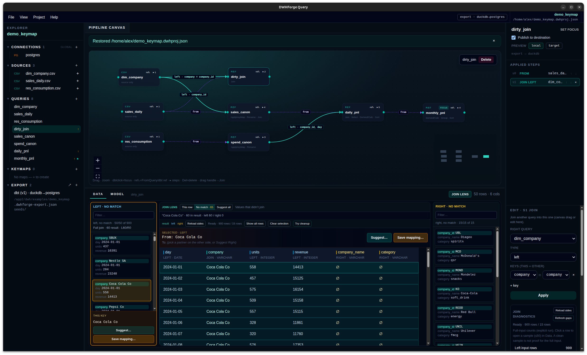

Local-first · DuckDB · dbt export
DWHForge Query
Build visually. Verify on real data. Ship dbt.
A local desktop workbench for turning PostgreSQL and files into inspectable transforms and a runnable dbt project—without sending raw data off your machine.

Why it exists
From messy inputs to a pipeline you keep
Two feeds spell the same company differently. A join drops rows. A rule changes a week after the first export. Investigate and edit where you build—then ship code you can run in your own infra.
-
See the data behind the graph
Select a query or an applied step and inspect its intermediate result before you publish.
-
Investigate joins where you build them
Join Lens, near-miss normalize, and From→To KeyMaps turn dirty keys into inspectable steps—and dbt seeds you keep in Git. See the mapping toolkit →
-
Compute where it makes sense
DuckDB for files and prep; PostgreSQL when the warehouse should own execution. Engine and destination are separate choices.
-
Keep the result as code
Export SQL models, sources, dependencies, and mapping seeds. Run them with dbt outside the app—in Git, CI, or your existing automation.
-
Come back and change it
Edit the workspace and re-export. Hash checks detect hand-edits to generator-owned files before overwrite.
-
Optional LLM—local data stays local
Join Lens can call an OpenAI-compatible API for Suggest all and chat on hard aliases. Schema and step context only; raw rows never leave the machine. Mapping toolkit →
Key mapping toolkit
Advanced tools for dirty join keys—not a black-box fuzzy merge
When sales says SBUX and the dimension says
STARBUCKS CORP, you need diagnosis, an editable
From→To table, and a seed in the export—not silent fuzzy ON.
-
Join Lens
Probe matched and unmatched keys on the Join you are editing. Inspect “this row,” no-match samples, and frequency—without leaving the canvas.
-
Near-miss → NormalizeKey
When trim, case, or leading zeros would recover matches, apply an explicit NormalizeKey step before the Join. Suggestions require acceptance; automatic fuzzy merge stays off.
-
From→To KeyMap editor
First-class tab next to the pipeline. Maintain alias → canonical ID like a dimension table. Add unmatched values from Lens with one gesture; apply left, right, or both into the graph.
-
Reuse across queries
One map cleans sales and spend (or any feed) via ApplyKeyMap steps. The same dictionary ships as
seeds/map_*.csvwith typed varchar columns so leading zeros survivedbt seed. -
Seed as source of truth after export
After the first export, edit the seed in Git or sync it back into the editor. Re-export detects hand-edits instead of silently wiping your aliases.
-
When fuzzy cannot invent the answer
Tickers, legacy IDs, and historical names that never appear in the dimension stay human-owned in the KeyMap—not guessed into the Join ON.
-
Optional LLM assist (Join Lens Auto)
Connect an OpenAI-compatible endpoint (
llm.base_url/model/api_keyin~/.dwhforge-query/settings.json). Use Suggest all for similar-name proposals you Accept into a KeyMap, then chat about leftovers with lineage, schemas, and neighbor fields as context. Raw preview rows never leave the machine—only structured schema / step / prompt payloads. The model narrates and suggests; it does not rewrite Join keys or invent counts.
Core loop
Connect → transform → publish → build
Built for data engineers, DBAs, and consultants who already live in Postgres, files, and dbt—not another analyst black box.
-
Connect sources
PostgreSQL tables, CSV, Parquet, S3-compatible storage, and DuckDB files in one project explorer.
-
Build the graph
Join, append, filter, group, sort, calculated columns, and custom SQL—with Applied Steps you can revisit.
-
Mark what to publish
Choose the execution engine and destination, then enable Publish to destination on the queries that become marts.
-
Export → Parse → Build
Write a real dbt project, gate on offline parse, then build with progress and logs—inside the app or from the CLI.
Routes
Engine ≠ destination
| Sources | Execution | Destination |
|---|---|---|
| PostgreSQL | dbt-postgres |
PostgreSQL |
| Files / S3 | dbt-duckdb |
DuckDB |
| Files / S3 | dbt-duckdb |
PostgreSQL |
| DuckDB | dbt-duckdb |
PostgreSQL |
Try it
Company aliases → PostgreSQL
The bundled Key mapping demo follows sales and spending across 15 companies and 60 days—same businesses, different names. Use the full mapping toolkit end to end.
-
Open the problem. Help →
Load demo → Key mapping; inspect
dirty_joinwithout a map. - Diagnose in Join Lens. Probe unmatched keys; try near-miss NormalizeKey where trim/case helps; Add to map… for true aliases.
- Edit the KeyMap. Fill From→To (including non-lexical leftovers like tickers). Optional: Connect LLM in Join Lens Auto for Suggest all / chat on hard aliases—then Accept into the map. Apply left on sales and spend with one shared map.
-
Ship the seed. Follow
daily → monthly; Export dbt; the map lands as
seeds/map_*.csv. Build to PostgreSQL when ready.
Get the app
Linux and Windows portable builds
Electron portable packages with offline DuckDB extensions. No DWHForge account. Early development—expect sharp edges.
Loading latest release…